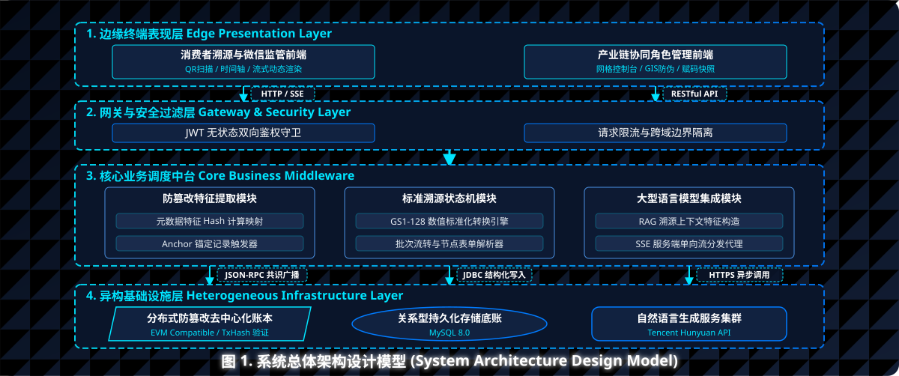

种植建档
农户录入产地、药材、批次和农事信息，形成最早的责任主体。
 药途寻迹
药途寻迹
GS1-128 · EVM 存证 · 全链路质控
中药材从种植到流通的可信数据底座。
用扫码开工、质检准入、发运锁定和哈希存证，把每一批药材的时间、地点、责任人与质量记录串成可验证链路。
0x8f42...7ac9
系统把移动端采集、后端状态机、质检报告和发运赋码绑定起来，让溯源不只是展示记录，而是控制流程。
农户录入产地、药材、批次和农事信息，形成最早的责任主体。
进入加工或质检前采集位置和服务器时间，压缩补录空间。
未通过质检的批次无法发运，把质量检查变成硬性卡点。
GS1 编码、库存换算和上链哈希共同锁定流通侧数据。
技术架构
后端以 JWT、JPA、Flyway 与 MySQL 组织权限和数据；溯源数据可按哈希锚定到 EVM 兼容链，消费者端通过批次查询展示完整链路。
多角色账号体系覆盖管理员、农户、加工厂、物流与监管方。

协同角色
维护用户、批次、基础数据和系统配置。
录入种植档案与农事记录，建立源头凭证。
执行扫码开工、加工记录、质检联动和发运赋码。
按批次追踪数据、质量报告与异常环节。